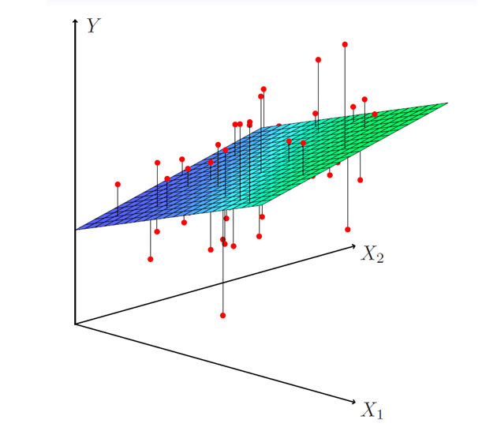

Multiple linear regression
Here our model is
\[Y=\beta_0+\beta_1X_{1}+\beta_2X_{2}+...+\beta_pX_{p}+ \epsilon,\]-We interpret \(\beta_j\) as the average effect on Y of a one unit increase in \(X_j\), holding all other predictors fixed. In the advertising example, the model becomes
\[sales=\beta_0+\beta_1*TV+\beta_2*radio+\beta_3*newspaper+\epsilon.\]The ideal scenario is when the predictors are uncorrelated
A balanced design:
- Each coefficient can be estimated and tested separately.
- Interpretations such as "a unit change in $$X_j$$ is associated with a $$\beta_j$$ change in Y, while all other variables stay fixed", are possible.
- In other words, Y should be highly correlated with predictors (X), but predictors (X) should be uncorrelated.
Correlations amongst predictors cause problems:
- The variance of all coefficients tends to increase, sometimes dramatically
- Interpretations become hazardous - when \(X_j\) changes, everthing else changes.
- Statistical explanation–mutual information: https://www.youtube.com/watch?v=U9h1xkNELvY
Estimation and Prediction for Multiple Regression
- Given estimates \(\hat{\beta_0},\hat{\beta_1},...\hat{\beta_p}\), we can make predictions using the formula
- We estimate \({\beta_0},{\beta_1},...{\beta_p}\) as the values that minimize the sum of squared residuals
- This is done using standard statistical software. The values \(\hat{\beta_0},\hat{\beta_1},...\hat{\beta_p}\) that minimize RSS are the multiple least squares regression coefficient estimates.

| Index | Prev | Next |